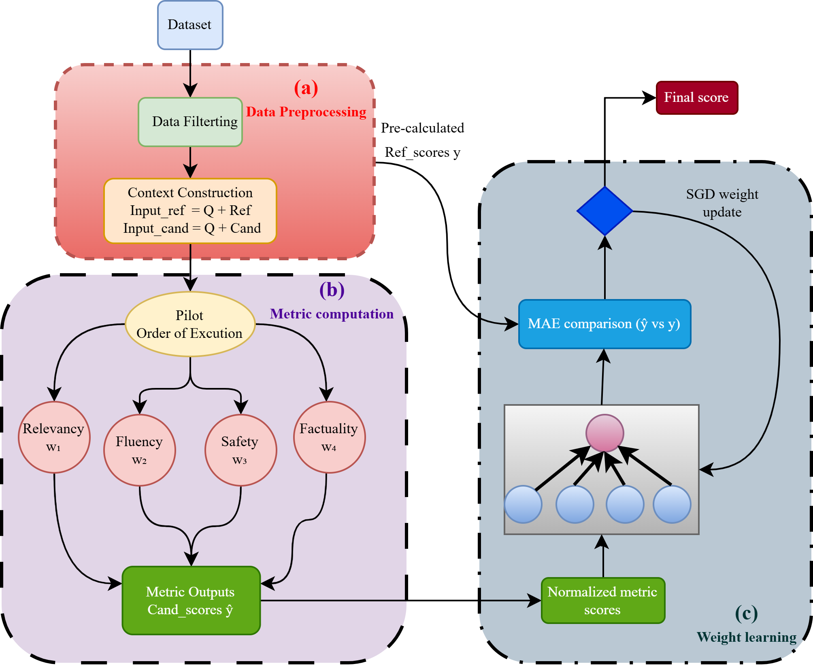
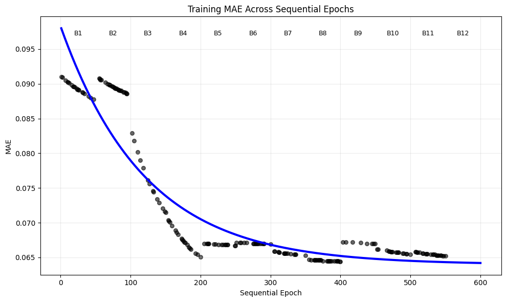
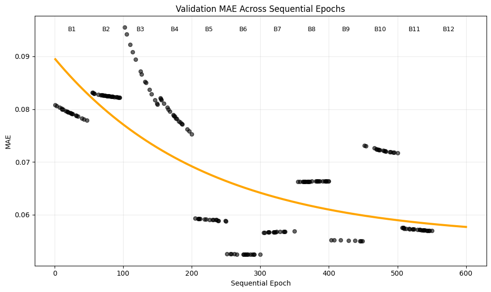
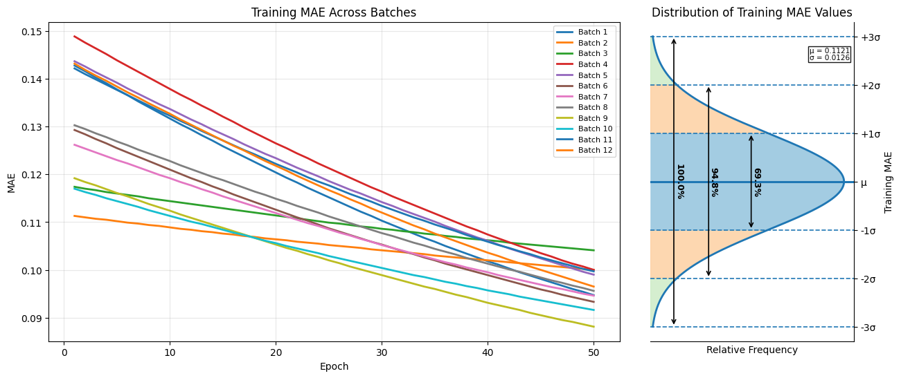
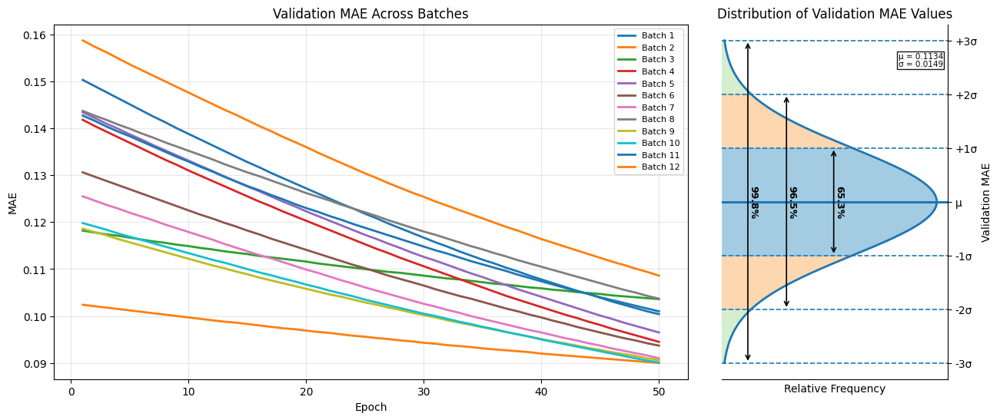

HLFEval: Hybrid LLM-Based Framework for Sentence-Level Evaluation
Developed a hybrid evaluation framework for sentence-level assessment of LLM-generated text. The framework combines semantic relevance, fluency, safety, and factuality into a learned multi-dimensional scoring system designed to provide more interpretable and reliable evaluation than single-metric approaches.

Sequential Training: Training MAE behavior across sequential batch learning.

Sequential Validation: Validation MAE trend for sequential training across batches.

Independent Training: Training MAE behavior when batches are trained independently.

Independent Validation: Validation MAE behavior for independently trained batch models.